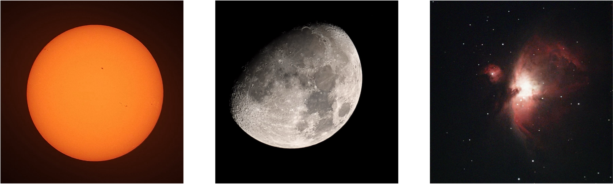

About Me
Hi! I am Luyao Zhang, a PhD researcher in Astronomy at the School of Physics and Astronomy, University of Leicester . I work with Prof. Sergei Nayakshin .
My research focuses on the formation and dynamical evolution of planets in young and evolving multiple-star systems. I am particularly interested in how planets form, migrate, survive, become tidally disrupted, or are ejected during the formation and growth of binary systems.
My work combines hydrodynamical simulations with models of gravitational instability and disc fragmentation. I primarily use FARGO-ADSG to study self-gravitating discs, planet-disc interactions, and the dynamical evolution of planets and stellar companions. I also carry out large-scale astrometric data analysis to investigate stellar dynamics and past stellar encounters with galpy.
Projects
1. Formation and Survival of Planets in Growing Binary Systems
Planetary fragments can migrate rapidly through the disc while a dominant fragment grows into the secondary star. Their subsequent dynamical interactions can produce a wide variety of planetary architectures, including circumprimary (S-type) planets, circumsecondary planets, circumbinary (P-type) planets, tidally disrupted planets, and free-floating planets.
Related Publications
Disc fragmentation - III. The need for a new
paradigm for formation of planets within close
binary systems
Luyao Zhang,
Sergei Nayakshin, Clément Baruteau,
Philippe Thébault, and Eduard I. Vorobyov
Monthly Notices of the Royal Astronomical Society
,
550, stag1363 (2026)
Disc fragmentation - II. Ejection of low-mass
free-floating planets from growing binary systems
Sergei Nayakshin,
Luyao Zhang,
A. Calović, H. Lee, C. Baruteau,
F. Meru, and L. Mayer
Monthly Notices of the Royal Astronomical Society
,
546, stag043 (2026)
2. Stellar Dynamics, Flybys, and Gaia
I use Gaia DR3 astrometry together with other radial-velocity measurements from large spectroscopic surveys to reconstruct stellar trajectories and identify close stellar encounters.
Related Publications
A Cartesian Catalog of 30 Million Gaia Sources
Based on Second-order and Monte Carlo Error
Propagation
Luyao Zhang,
Fabo Feng, Yicheng Rui,
Guang-Yao Xiao, and Wenting Wang
Research in Astronomy and Astrophysics,
25, 055010 (2025)
Search for Past Stellar Encounters and the
Origin of 3I/ATLAS
Y. Guo,
Luyao Zhang,
F. Feng, Z.-Y. Li, A. Pomazan, and X. Yang
The Astronomical Journal,
170, 362 (2025)
Outside Research
Outside research, I enjoy astrophotography and observational astronomy. I like capturing the night sky and observing with small telescopes whenever the weather allows. Astrophotography gives me a different way to experience astronomy beyond simulations and data analysis, and keeps me connected with the night sky that inspires my research.
